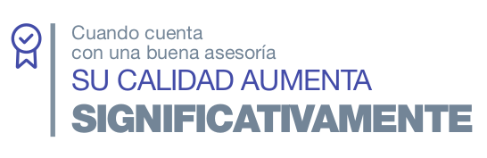

REALIZAMOS ACTIVIDADES DE ASESORÍA
ENTRE OTRAS:
Realizamos actividades de asesoría para apoyarlo en la implementación de requisitos o lineamientos según sus necesidades, en
aspectos como:
▶ Definición de planes de acción y evidencias
▶ Diagnóstico, implementación y unificación de sistema de gestión
▶ Asesoría en Tomas de muestra en diferentes matrices
▶ Asesorías técnicas en métodos analíticos.

Nuestras temáticas incluyen, pero no se limitan a:
▶ Levantamiento de planes de acción, acciones a realizar y
evidencias que se deben aportar al Organismo de Acreditación
para un cierre efectivo
▶ Diagnóstico con el fin de verificar el cumplimiento del sistema de
gestión en cuanto a los requisitos exigidos por las Normas ISO,
RUC y Decreto 1072 y los documentos asociados de la
compañía.
▶ Implementación de SGC y SGI
▶ Apoyo en la implementación, verificación y validación de
métodos de ensayo y calibración
▶ Tomas de muestra de la matriz agua (simple, compuesto, lótico,
léntico, subterránea)
▶ Tomas de muestra en la matriz suelo, lodo, sedimento y residuos
peligrosos
▶ Toma de muestra en la matriz aire (Calidad del aire, Fuentes Fijas,
Ruido y emisión de ruido)
▶ Toma de muestra en la matriz Biota (Hidrobiología)
▶ Fortalecimiento de formación del personal
¿Por qué elegirnos?
✓ Procesos exhaustivos
✓ Personal capacitado
✓ Informes Detallados